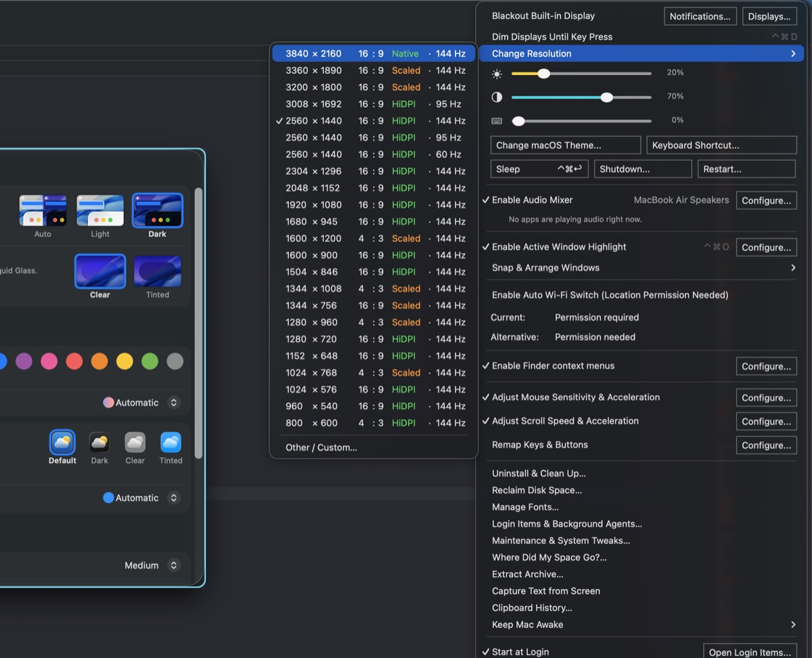
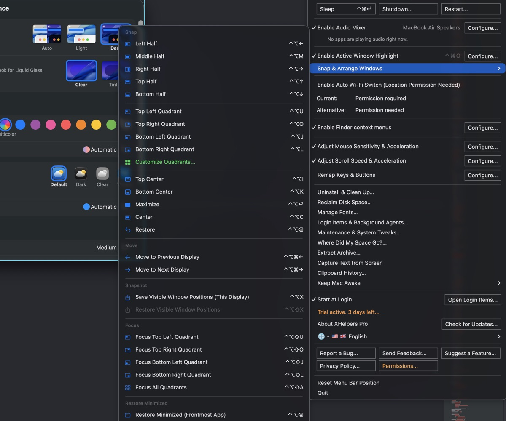

Display & Windows
Run the visual side of your desk without opening System Settings or a second window manager.
- Black out the built-in MacBook display while it mirrors an external monitor; dim displays until a key press.
- Brightness, contrast and keyboard-backlight sliders right in the menu, plus sleep, restart, shut down and macOS theme.
- Install HiDPI presets and custom resolutions, with a keep-or-revert safety timer after every switch.
- Snap & Arrange Windows to halves, quadrants you can customize, maximize or center, or the next display; save and restore window positions.
- Highlight the active window with a click-through border; Keep Mac Awake for 30 minutes, hours, on power, or while an app runs.
Global keyboard shortcuts cover arrangement, display moves and app focus, with built-in Rectangle conflict resolution.

